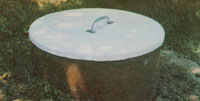
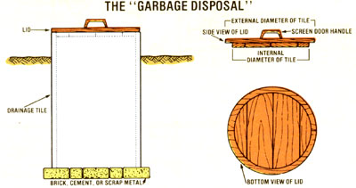
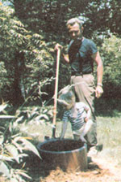

Getting rid of kitchen waste can be a simple, effective, and inexpensive process, with...
Even if you're not especially skilled at home projects, you can make and install-in half a day-a garbage disposal that uses no power . . . won't clog your septic tank or drainage field . . . costs under $20 . . . and turns out a useful product.
It seems our household always produces some kitchen waste that we can't feed to the chickens, barn cats, or pigs. But when we tried burying the "leftover leftovers" out in the garden, some varmint would always dig them up . . . while burn ing the garbage caused our oil-drum incinerator to clog up.
Fortunately, I recalled an article about composting that I'd read back in the 40's. The piece had described a homemade composter consisting of an 18"-diameter clay drain tile, three-fourths buried in the ground, with a top and bottom added. That article's author said he ran his disposal on earthworms, but-since our animals consume all of our scraps except for eggshells, citrus and banana peels, and small bones-the useful wigglers haven't (yet!) been lured into my version.
[EDITOR'S NOTE: You may be able to attract worms and speed up the decaying process by layering your kitchen garbage with an equal mix of freshly cut green , plants and chopped dried leaves ... a handful of blood meal, available from most .garden centers . .. and a thin coating of 'soil. And sprinkle a little water over it occasionally.]
In practice, we have two tile composters. It takes about a year to fill one, at which time we simply switch to the other. Then, when the second one is full, the contents of the first have decomposed into a rich humus and are ready to be emptied on our garden plot.
HOW TO BUILD IT
The initial step in constructing a homestead garbage disposal is to locate an 18 "diameter clay drainage tile. The units can be found at building supply yards where bricks, cement blocks, and such are sold (if you plan to put a brick bottom in your disposal, you can buy the materials to do so at the same time).
Now, pick a well-drained spot for your composter and dig a hole that's a few inches larger than you think is necessary, since a big clay tile that "surprises" you by getting stuck half in and half out of the earth can be very difficult to handle. Next, lay the "groundwork", which can be constructed of brick, cement, or steel (my base is made from the top of an old 55-gallon drum), making sure that it's level. And whatever material you use, do provide for drainage, but keep the openings small ... bearing in mind that a rat can get through a half-inch crack. When that's accomplished, slide the tile into place and backfill around it with dirt.
The disposal's top can be made from scrap lumber cut to form two circles (see the accompanying diagram), which will create a lid that fits snugly and won't blow away in gusty winds. (It's best, however, not to make it so weighty that taking out the garbage becomes a heavy chore!) If you don't have a drawing compass capable of making the big circles, find the center of a large-enough board . . . tap a nail partway into the wood at that point . . . attach a string to it . . . tie a pencil to the string's other end at the proper distance (one-half the diameter of the circle being drawn), scribe the shape . .. then use a saber saw or a band saw to cut it out. Finally, center the smaller disk upon the larger one . . . nail them together . . . paint the cover . . . mount a screen-door handle on the lid . . . and the job's done.
We've used our pair of units for three years now and are quite pleased with them. The finished compost is dry, crumbly, and odorless (it resembles peat mixed with eggshells), and our plants just love it! What more could we ask from a couple of holes in the ground?
EDITOR'S NOTE.' In China, household garbage is used to produce methane gas . Check out the following article for a report on the Oriental fuel-makers' methods.
|
 |
 |
 |